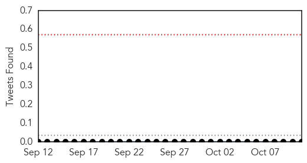
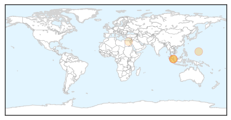
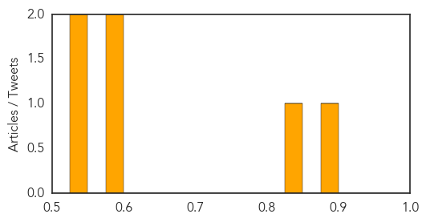

Hepatitis
30-Day Web Trend
4 alerts, 0 warnings

30-Day Twitter Trend
0 alerts, 0 warnings

Article Locations
Article Confidences
Top Articles:
- 0.885
- SGH admits fault
- 0.839
- WHO conference kicks off
- 0.579
- Human error could be cause, but..., news, Health News, AsiaOne YourHealth
- 0.579
- How accountable is your doctor?
- 0.547
- Ensure Proper Training After Employees were Allegedly Vaccinated Using the Same Syringe
- 0.531
- Egypt to receive 30K bottles of Sovaldi by Oct 19
Top Tweets:
-
No tweets found for Oct 11, 2015
Dengue Fever
30-Day Web Trend
16 alerts, 11 warnings

30-Day Twitter Trend
0 alerts, 0 warnings

Article Locations

Article Confidences

Top Articles:
- 0.993
- Graveyards a hotbed of dengue mosquitoes: DCO
- 0.914
- Dengue treatment costs a bomb
- 0.908
- Collector reviews anti-dengue operations
- 0.778
- Inspector succumbs to dengue
- 0.670
- Tawa-tawa pill maker dead serious about dengue
- 0.648
- Doctors urge climate action
- 0.642
- Yahoo7
- 0.635
- Thailand Live Monday 12 Oct 2015
- 0.599
- Thailand Live Monday 12 Oct 2015
- 0.544
- Dengue glare on teen death
- 0.514
- DOH-7 urged local health units to be honest in dengue cases
- 0.511
- HC asks Delhi to ensure proper utilisation of dengue funds
Top Tweets:
- 0.699
- Flavivirus news: As dengue continues taking a toll on NCR, flu cases hit region - Hindustan Tim... http://t.co/ZpQSraXrcg pathogenposse
- 0.699
- Flavivirus news: As dengue continues taking a toll on NCR, flu cases hit region - Hindustan Tim... http://t.co/YuhKDk9Jaz pathogenposse